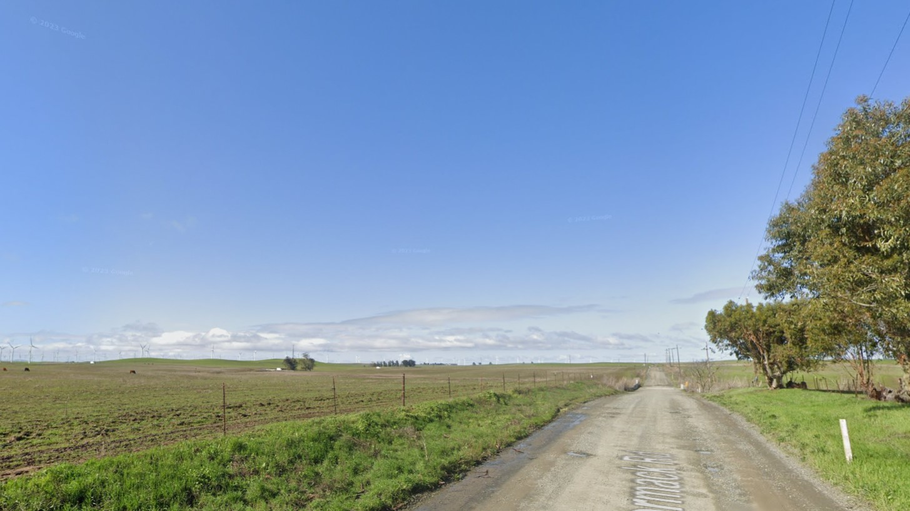

Highlight of the Vision:
Connecting neighborhoods with safe and slow streets for people and all modes of transportation.


Connecting neighborhoods with safe and slow streets for people and all modes of transportation.